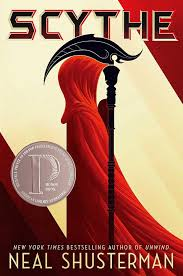

My name is Nathan Haws, I am 25 years old and a computer science major. I spend most of my free time hanging out with my family, going out with my siblings, watching TV, and playing video games. I work as a baker at Einsteins Bros bagels, I wake up early for that job and work an inconsistent schedule. I want to become a video game developer, whether with a big triple A studio or a small indie developer if I can work on games.
I was born in Lester, England, where my mother is from. My father was an American Mormon missionary from Arizona, he went back to see people with whom he had visited and met with my mom being one among them. They fell in love and went back to Arizona and the US to get married. My mom had my two older siblings my sister charlotte and my brother Bradley. They moved back to England where my mother had me. We moved back to Arizona and the US and had both my little siblings Lauren and Joshua. I went to school up to first grade in April in Arizona when my dad passed away when I was at the age of seven. By February of the following year my mom remarried to my stepdad and we moved to Utah with him where I finished second grade. We moved around two more times until we came to the house in which we still live today. I went from fifth grade until graduating high school in Bountiful. I graduated from Bountiful High School in the class of 2018.
I have a lot of interests, but since this is a computer science class I will focus on media that I love. I list my five favorite video games and make a table of my five favorite books/ book series, tv shows, and movies/ movie franchises.
Scythe | Books Series | TV Shows | Movies Franchises |
|---|---|---|
| Scythe Thunder Head The Toll |
The Rookie | Harry Potter Movies |
| The Testing book series | The Mentalist | Star Wars Episodes 1-6 |
| Eragon Series | How I Met Your Mother | Mission Impossible Movies |
| Percy Jackson and the Olympians Heroes of Olympus |
White Collar | Marvel MCU Movies |
| Harry Potter Books | Smallville | Pitch Perfect Movies |